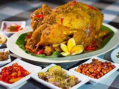

Ayam Betutu
Ayam utuh yang dibalur bumbu rempah super lengkap (Base Genep) dan dimasak perlahan hingga sangat empuk.

Sate Lilit
Sate unik dari daging cincang yang dicampur kelapa parut dan rempah, dililitkan pada batang serai.
Nasi Jinggo
Nasi rames porsi mini yang dibungkus daun pisang, terkenal dengan sambalnya yang pedas menyengat.